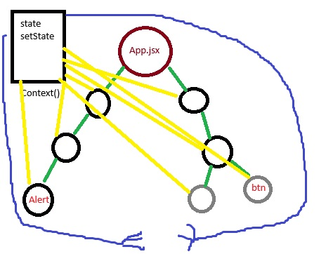
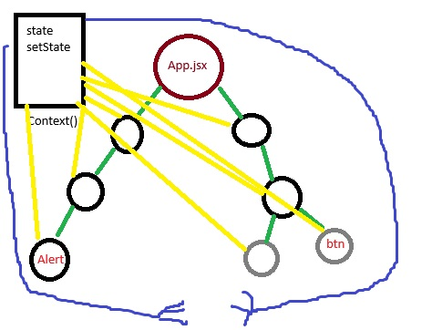

React
Модуль 1_1
файли мають закінчення jsx вмісто js
React
– це бібліотека для створення елементів інтерфейсу користувача. У
React немає вбудованої маршрутизації, HTTP-модуля тощо. Проте є
багата екосистема, яка дозволить вирішити будь-яке завдання.
При створенні застосунку з використанням React розробник не
взаємодіє безпосередньо з DOM-деревом. Його завдання – описати
інтерфейс за допомогою компонентів (шаблон) та керувати зміною
даних (модель). React, при зміні даних моделі, сам оновить
інтерфейс за шаблоном.
React – мультиплатформний
розмітку можна рендерити на сервері ( Next.js ), писати нативні ( React Native ) або десктопні ( Electron ) застосунки.Для створення React-застосунку необхідні Node.js, Webpack, Babel, React і DevTools. Можна написати свою Webpack-збірку або взяти будь-яку хорошу з GitHub.
-
створення React-застосунку
Для навчання та маленьких/середніх проектів рекомендується використовувати утиліту від авторів React.
npx create-react-app ім'я_папки_проекту
Щоб створити застосунок у поточній папці, замість імені проекту ставиться крапка. Наприклад npx create-react-app .
React DevTools
В інструментах розробника можна подивитися на дерево компонентів, їх стан та пропси. Профайлер корисний під час оптимізації застосунку.
-
JSX (JavaScript Syntax Extension)
JSX створює елементи – найменші будівельні блоки React. Елементи Virtual DOM це звичайні JavaScript об'єкти, тому створювати їх дуже швидко.
Використовуючи JSX, розмітка стає схожою на звичні HTML-шаблони.
-
Усередині JSX можна використовувати будь-який валідний вираз, обертаючи його в фігурні дужки.
-
Значення атрибутів вказуються в подвійних лапках, якщо це звичайний рядок, та у фігурних дужках, якщо значення обчислюється, або тип відрізняється від рядка.
-
Всі атрибути React-елементів іменуються в camelCase нотації.
-
JSX-теги можуть бути батьками інших JSX-тегів. Якщо тег порожній або самозакривається, його обов'язково необхідно закрити використовуючи />.
const imageUrl =
"https://images.pexels.com/photos/461198/pexels-photo-461198.jpeg?dpr=2&h=480&w=640";
const productPrice = 10.99;
const product = (
< div>
< img src={imageUrl} alt="Tacos With Lime" width="640" />
< h2>Tacos With Lime< /h2>
< p>Price: {productPrice}$< /p>
< button type="button">Add to cart< /button>
< /div>
);
Рендер елементів у DOM-дерево
Для того, щоб відрендерувати елемент у DOM-дерево, у пакеті react-dom є методи createRoot(container) та render(element), які працюють разом.
Перший приймає посилання на існуючий DOM-елемент, наприклад div#root з index.html і створює корінь, в який буде рендеруватись вся програма.
Другий чекає на посилання на React-елемент або компонент (що рендерити).
ReactDOM.createRoot(document.getElementById("root")).render(product);
Правило спільного батька
Якщо в розмітці зайвий тег-обгортка не потрібний, використовуються фрагменти, схожі на DocumentFragment. Цей вбудований компонент при рендері розчиняється, підставляючи свій вміст.
import { Fragment } from "react";
const post = (
< Fragment>
< h2>Post Header< /h2>
< p>Post text< /p>
< /Fragment>
);
Синтаксис фрагментів можна скоротити та не додавати імпорт Fragment. Babel зробить всі необхідні трансформації, замінивши порожні JSX-теги на React.Fragment.
const post = (
< >
< h2>Post Header< /h2>
< p>Post text< /p>
< />
);
-
-
Компоненти
– основні будівельні блоки React-застосунків, за допомогою яких інтерфейс розділяється на незалежні частини.
Розробник створює невеликі компоненти, які можна поєднувати, щоб сформувати більші, або використовувати їх як самостійні елементи інтерфейсу. Найголовніше в цій концепції те, що і великі, і маленькі компоненти можна використовувати повторно і в поточному, і в новому проекті.
Компонент це окремо створений файл, в якому створена розмітка будьякого елемента (картки товару, лоадер, модалка і т д) який ми потім можемо підключити в будь-якому іншому компоненті (файлі) і перевикористовувати.
Також можна вставляти один компонент в інший при рендері.
В компонент не імпортуеться масив з елементами, всі данні передаються пропсами з основного файлу (App.js) де буде рендиритись компонент.
Пропси мають ключ="значення", зазвичай пропси називають так само як в ключі в об'єктах які передаємо. Пропси значення в пропсах передаємо в фігурних дужках price={product.price}, рядок (текст) в лапках.КОМПОНЕНТ
const Product = ({ imgUrl, name, price }) => (
< div>
< img src={imgUrl} alt={name} width="640" />
< h2>{name}< /h2>
< p>Price: {price}$< /p>
< button type="button" >Add to cart< /button>
< /div>
);
Тут ми імпортуемо компонент ProductList і в ньому рендиремо компонент Product
ФАЙЛ ОСНОВНИЙ З ЯКОГО РЕНДЕРИТЬСЯ ВЕСЬ ПРОЕКТ
import ProductList from "productList.js";
import Product from "product.js";
import products from "products.json"; // файл з масивом об'єктів продуктів
const App = () => (
< div>
< h1>Best selling products< /h1>
< ProductList >
< Product
imgUrl={products.imgUrl}
name="Tacos With Lime"
price={products.price}
/>
< /ProductList>
< /div>
);
Значення пропсів за замовчуванням
Що якщо компонент очікує якесь значення, а його не передали? - під час звернення до властивості об'єкта props отримаємо undefined.
Для того щоб вказати значення властивостей за замовчуванням, використовується синтаксис значень за замовчуванням під час деструктуризації пропсів.
import imageDefault from "../images/image.jpg";
const Product = ({
imgUrl = imageDefault,
name = "no name",
price = "please call at",
}) => (
- || -
);
Властивість props.children
Концепція дочірніх елементів дозволяє дуже просто робити композицію компонентів. У вигляді дітей можна передавати компоненти як вбудовані, так і кастомні. Це дуже зручно під час роботи зі складними складеними компонентами.
Властивість children автоматично доступна в кожному компоненті, її вмістом є те, що знаходиться між відкриваючим та закриваючим JSX-тегом.
У функціональних компонентах звертаємось як props.children.
Значенням props.children може бути практично все, що завгодно.
const Profile = ({ name, email }) => (
< div>
< p>Name: {name}< /p>
< p>Email: {email}< /p>
< /div>
);
const Panel = ({ title, children }) => (
< section>
< h2>{title}< /h2>
{children}
< /section>
);
const App = () => (
< div>
< Panel title="User profile">
< Profile name="Mango" email="mango@mail.com" />
< /Panel>
< /div>
);
Перевірка типів одержуваних пропсів Властивість propTypes
Пакет prop-types надає ряд валідаторів для перевірки коректності отриманих типів даних під час виконання коду, повідомляючи про невідповідності в консолі.npm install --save-dev prop-types
import PropTypes from "prop-types";
const Product = ({
imgUrl = "https://dummyimage.com/640x480/2a2a2a/ffffff&text=Product+image+placeholder",
name,
price,
}) => (
< div>
< img src={imgUrl} alt={name} width="640" />
< h2>{name}< /h2>
< p>Price: {price}$< /p>
< button type="button">Add to cart< /button>
< /div>
);
Product.propTypes = {
imgUrl: PropTypes.string,
name: PropTypes.string.isRequired,
price: PropTypes.number.isRequired,
};
-
Рендер за умовою
if за допомогою логічного оператора &&
Читається як: якщо умова приводиться до true, то рендерим розмітку.
const Mailbox = ({ unreadMessages }) => {
return (
< div>
< h1>Hello!< /h1>
{unreadMessages.length > 0 && (
< p>You have {unreadMessages.length} unread messages.< /p>
)}
< /div>
);
};
if...else за допомогою тернарного оператора
const Mailbox = ({ name, unreadMessages }) => {
return (
< div>
< h1>Hello {name}< /h1>
< p>
{unreadMessages.length > 0
? `You have ${unreadMessages.length} unread messages.`
: "No unread messages."}
< /p>
< /div>
);
};
-
Рендер колекції однотипних елементів
Списки і ключіДля того щоб відрендерити колекцію однотипних елементів, використовується метод Array.prototype.map(), callback-функція якого, для кожного елемента колекції повертає JSX-розмітку. Отже, отримуємо масив React-елементів, який можна рендерити.
Під час виконання коду з прикладу вище спливе попередження про те, що для елементів списку потрібен ключ. React не може відрізнити елементи в колекції, таким чином, перемальовуючи всю колекцію повністю у разі будь-яких змін.
Ключ (key) — це спеціальний рядковий проп, який потрібно задати під час створення елементів колекції.
Елементи всередині колекції повинні бути забезпечені ключами, щоб мати стабільну ідентичність. React використовує ключі, щоб визначити, які з елементів в колекції необхідно створити і відрендерити знову, а не використовувати елементи з попереднього рендеру. Таким чином ми уникаємо перестворення всіх елементів колекції щоразу, коли щось змінюється.
const favouriteBooks = [
{ id: "id-1", name: "JS for beginners" },
{ id: "id-2", name: "React basics" },
{ id: "id-3", name: "React Router overview" },
{ id: "id-4", name: "Redux in depth" },
];
const BookList = ({ books }) => (
< ul>
{books.map(book => (
< li key={book.id}>{book.name}< /li>
))}
< /ul>
);
-
Стилізація (SCSS, CSS)
-
CSS-модулі (основний метод для стилізації)
Create React App за замовчуванням підтримує CSS-модулі, все, що необхідно зробити це створювати файли стилів з розширенням .module.css, наприклад Alert.module.css. Всередині модуля CSS можна використовувати будь-який валідний CSS.
src/components/Alert.module.css
.alert {
margin: 8px;
padding: 12px 16px;
border-radius: 4px;
background-color: gray;
color: white;
}
Синтаксис імпорту CSS-модуля нагадує імпорт файлу JavaScript модуля. У CSS-модулі є експорт за замовчуванням - об'єкт відповідності оригінального та згенерованих імен класів. У фінальному файлі стилів буде унікальне ім'я класу у форматі [filename]_[classname]__[hash].
src/components/Alert.js
// Синтаксис імпорту CSS-модуля
import css from "./Alert.module.css";
// Отримуємо об'єкт відповідності імен класів
console.log(css); // { alert: "Alert_alert_ax7yz" }
const Alert = ({ children }) => {
// Звертаємось до властивості об'єкта на ім'я класу з файлу модуля
return < p className={css.alert}>{children}< /p>;
};
Властивість composes
Композиція селекторів це одна з ключових можливостей CSS-модулів, яка дозволяє створювати клас, наслідуючи стилі іншого класу, але не дублюючи їх. Наслідуємо стилі базового класу .alert у всіх класах варіантів. Властивість composes має передувати іншим правилам, щоб можна було перевизначити стилі, якщо це необхідно.
src/components/Alert.module.css
.alert {
margin: 8px;
padding: 12px 16px;
border-radius: 4px;
background-color: gray;
color: white;
}
.info {
composes: alert;
background-color: blue;
}
.success {
composes: alert;
background-color: green;
}
.error {
composes: alert;
background-color: red;
}
.warning {
composes: alert;
background-color: orange;
}
При композиції у простих випадках можна обійтися без бібліотеки clsx. Не задаємо базовий клас alert, тому що від нього виконано композицію класів варіантів. В результаті на елементі
будуть два класи, базовий alert і клас варіанта, у якому перевизначається значення кольору фону.
src/components/Alert.js
import css from "./Alert.module.css";
const Alert = ({ variant, children }) => {
return < p className={css[variant]}>{children}< /p>;
};
До властивостей об'єкта зазвичай звертаються як css.alert, але можна використовувати квадратні дужки, наприклад css["alert"]. Це корисно у випадку коли ім'я властивості зберігається у змінній, як у нас у пропсі variant.
Бібліотека clsx
Додамо CSS класи для вже знайомих нам пропсів outlined та elevated. Імена класи, що складаються з декількох слів записують у верблюжій нотації. В протилежному випадку, оскільки вони стають властивостями об'єкта, звертатися до них доведеться через квадратні дужки, наприклад css["is-outlined"], що менш зручно.
src/components/Alert.module.css
.alert {
margin: 8px;
padding: 12px 16px;
border-radius: 4px;
background-color: gray;
color: white;
}
.info {
composes: alert;
background-color: blue;
}
.success {
composes: alert;
background-color: green;
}
.error {
composes: alert;
background-color: red;
}
.warning {
composes: alert;
background-color: orange;
}
.alert.isOutlined {
outline: 1px solid black;
}
.alert.isElevated {
box-shadow: rgb(0 0 0 / 20%) 0px 3px 3px -2px,
rgb(0 0 0 / 14%) 0px 3px 4px 0px, rgb(0 0 0 / 12%) 0px 1px 8px 0px;
}
src/components/Alert.js
import clsx from "clsx";
import css from "./Alert.module.css";
const Alert = ({ variant, outlined, elevated, children }) => {
return (
< p
className={clsx(css[variant], {
[css.isOutlined]: outlined,
[css.isElevated]: elevated,
})}
>
{children}
< /p>
);
};
-
Вбудовані стилі
Існує кілька способів стилізації компонентів, найпростіший, але в той же час найбільш обмежений – це вбудовані стилі. Для цього використовується атрибут style, який у React приймає не рядок, а об'єкт стилів.
Створимо компонент Alert який буде рендерувати абзац тексту та приховає у собі майбутню логіку вибору кольору фону.
src/components/Alert.js
const alertStyles = {
margin: 8,
padding: "12px 16px",
borderRadius: 4,
backgroundColor: "gray",
color: "white",
};
export const Alert = ({ children }) => {
return < p style={alertStyles}>{children}< /p>;
};
Зробимо так, щоб залежно від типу оповіщення, у компоненті Alert змінювався колір фону абзацу. Для цього додамо йому обов'язковий пропс variant з кількома можливими значеннями.
src/components/App.js
import { Alert } from "./Alert";
const App = () => {
return (
<>
< Alert variant="info">
Would you like to browse our recommended products?
< /Alert>
< Alert variant="error">
There was an error during your last transaction
< /Alert>
< Alert variant="success">
Payment received, thank you for your purchase
< /Alert>
< Alert variant="warning">
Please update your profile contact information
< /Alert>
);
};
Логіку вибору кольору винесемо у функцію getBgColor(variant), яка буде повертати рядок із назвою кольору залежно від значення параметра variant.
src/components/Alert.js
const alertStyles = {
margin: 8,
padding: "12px 16px",
borderRadius: 4,
color: "white",
};
const getBgColor = variant => {
switch (variant) {
case "info":
return "blue";
case "success":
return "green";
case "error":
return "red";
case "warning":
return "orange";
default:
throw new Error(`Unsupported variant prop value - ${variant}`);
}
};
export const Alert = ({ variant, children }) => {
return (
< p style={{ ...alertStyles, backgroundColor: getBgColor(variant) }}>
{children}
< /p>
);
};
На практиці вбудовані стилі використовуються тільки для динамічно обчислюваних значень властивостей, у парі із зовнішніми таблицями стилів. В якості основного способу стилізації компонентів вбудовані стилі не використовуються в проектах та тому не рекомендуються.
-
Ванільний CSS
Оформлення компонента можна винести до таблиці стилів. У цьому випадку стилі кожного компонента оголошуються в окремому CSS-файлі з розширенням .css. Ім'я файлу складається з імені компонента та розширення. Наприклад, для компонента Alert, файл стилів буде називатися Alert.css.
src/components/Alert.css
.alert {
margin: 8px;
padding: 12px 16px;
border-radius: 4px;
background-color: gray;
color: white;
}
src/components/Alert.js
import "./Alert.css";
const Alert = ({ children }) => {
return < p className="alert">{children}< /p>;
};
Бібліотека clsx
Для вирішення більшості завдань, пов'язаних з безліччю класів, що задаються згідно з певними умовами, використовують бібліотеку clsx. Звичайно, JavaScript надає багатий синтаксис, але здебільшого пишуться непродуктивні рішення або код, що погано читається. Бібліотека стандартизує цей процес і робить його більш зручним за рахунок продуманого синтаксису.
npm install clsx
Функції clsx можна передати список виразів як набір аргументів. Вирази що приводяться до true, результат яких це рядок або число, буде додано у фінальний рядок класів.
import clsx from "clsx";
const className = clsx(
"first",
10,
undefined && "second",
true && "third",
false ? "fourth" : "fifth"
);
console.log(className); // "first 10 third fifth"
Ось як виглядатиме код компонента Alert використовуючи бібліотеку clsx.
src/components/Alert.js
import clsx from "clsx";
import "./Alert.css";
const Alert = ({ variant, outlined, elevated, children }) => {
return (
< p
className={clsx(
"alert",
variant,
outlined && "is-outlined",
elevated && "is-elevated"
)}
>
{children}
< /p>
);
};
Препроцесори
npm install sass
Використовувати препроцесори можна, але можливість композиції компонентів робить їх менш корисними, оскільки замінює такі концепції як домішки, функції, вкладеність та інші. Не рекомендується використовувати одні й ті самі CSS-класи в різних компонентах, для цього є композиція компонентів.
Наприклад, замість використання базового CSS-класу .button у компонентах < LoginButton> та < FollowButton>, краще створити компонент < Button> зі своїми власними стилями, які можуть відображатись у кількох варіантах. Тоді компоненти < LoginButton> та < FollowButton> можуть використовувати компонент < Button>, а не просто CSS-клас.
// Button.js
const Button = ({ variant, children }) => {
// Базові стилі кнопки з кількома варіантами відображення
return < button className={clsx("button", variant)}>{children}< /button>;
};
// LoginButton.js
const LoginButton = () => {
// Унікальна логіка кнопки логіна
return < Button variant="primary">Login< /Button>;
};
// FollowButton.js
const FollowButton = () => {
// Унікальна логіка кнопки підписки
return < Button variant="secondary">Follow< /Button>;
};
Правила іменування файлів такі ж, як і для ванільного CSS, відрізняється тільки розширення, наприклад .scss для SASS. В іншому у препроцесорів ті ж можливості, концепції та недоліки, що і у ванільного CSS. Для того щоб додати можливість використання SASS, встановіть його компілятор у проект.
Використання ванільного CSS теж не найкращий підхід і має ряд недоліків, особливо у великих проектах.
Слабка масштабованість
Обмежене повторне використання стилів
Для динамічних значень необхідно використовувати вбудовані стилі
Проблема глобального простору імен
Необхідність використовувати якусь конвенцію іменування селекторів класу
Відсутність автоматичного видалення коду, що не використовується.
-
Нормалізація стилів
Стилі елементів можуть відрізнятись між браузерами. Для того, щоб привести їх до стандартного вигляду, необхідно додати набір правил, що виправляє відмінності у стилях елементів між браузерами, наскільки це можливо.
У Create React App вбудована можливість використовувати PostCSS Normalize - суміш кількох популярних таблиць стилів (normalize.css та sanitize.css) з найкращими практиками нормалізації. Все, що необхідно зробити - це додати директиву @import-normalize; у будь-якому місці файлу стилів або CSS-модуля. Повторюючі імпорти будуть автоматично видалені, тому достатньо додати директиву до одного файлу стилів, наприклад index.css.
src/index.css
@import-normalize;
body {
font-family: sans-serif;
line-height: 1.5;
}
h1,
h2,
h3,
h4,
h5,
h6,
p {
margin: 0;
}
ul,
ol {
margin: 0;
padding: 0;
}
img {
display: block;
max-width: 100%;
height: auto;
}
-
Компоненти-класи
Модуль 2_1
Назви компонентів пишуться з великої букви
-
Компоненти-класи
Якщо необхідно додати динаміки, компоненти створюються як класи, тому що компоненти-функції (до хуків) обмежені можливістю створення розмітки за отриманими пропсами.
-
Звичайний ES6 клас, тому застосовуються правила: конструктор, методи, контекст (this).
-
Обов'язково розширює базовий клас React.Component.
-
Діє як функція, яка отримує props, але також реалізує приватний внутрішній стан.
-
Необхідно оголосити обов'язковий метод render(), який викликається за замовчуванням і повертає JSX-розмітку.
-
Щоразу під час використання компонента-класу, React буде створювати екземпляр компонента (класу), тому доступ до пропсів відбувається через this.props.
-
Можна визначити кастомні методи класу і використовувати їх в будь-якому місці, зокрема всередині JSX, викликати або передавати дітям як пропси.
-
Коли змінюється стан або пропcи компонента, відбувається його ререндер.
// Відокремлюйте іменовані імпорти, це підвищує читабельність коду
import React, { Component } from "react";
class MyClassComponent extends Component {
static defaultProps = {};
static propTypes = {};
render() {
return < div>Class Component< /div>;
}
}
-
-
Події
Обробка подій< button onClick={event => console.log(event)}>Click me!< /button>
Для нативної події браузера в React створюється об'єкт-обгортка SyntheticEvent Object з ідентичним інтерфейсом. Це необхідно, щоб забезпечити крос-браузерність та оптимізувати продуктивність.
-
Додавання обробника подій з EventTarget.addEventListener() майже не використовується, за рідкісним винятком.
-
Пропси подій – не виняток та іменуються за допомогою camelCase. Наприклад onClick, onChange, onSubmit, onMouseEnter.
-
У проп події передається посилання на callback-функцію, яка буде викликана під час настання події.
-
Обробники подій отримують екземпляр SyntheticEvent Object.
В React "під капотом" реалізовано делегування подій. Слухачі не додаються безпосередньо до DOM-елементів. Передача колбека – це просто реєстрація функції, яка буде викликана внутрішніми механізмами реакта під час настання події.
return ( < div>
< span>0< /span>
< button type="button" onClick={this.handleIncrement.bind(this)}>
Increment by {step}
< /button>
< button type="button" onClick={this.handleDecrement.bind(this)}>
Decrement by {step}
< /button>
< /div>
);
Прив'язка контексту (використовуємо такий спосіб)
Потрібно завжди пам'ятати про значення this у методах, що використовуються як callback-функції. В JavaScript контекст у методах класу не прив'язується за замовчуванням. Якщо забути прив'язати контекст, і передати метод як callback-функцію обробнику події, під час виклику функції this буде невизначений (undefined).
Тобто, коли передаємо колбек функції для обробки подій то потрібно передавати не як звичайний метод класу
// ❌ Погано
class Counter extends Component {
/* ... */
handleIncrement(evt) {
// ...
}
а передаємо як стрілочну функцію щоб привязало контекст
// ✅ Добре
class Counter extends Component {
/* ... */
handleIncrement = evt => {
/* ... */
};
Прив'язка в конструкторі
Ще один спосіб прив'язати контекст – зробити це у конструкторі класу. Якщо callback-функцій багато, можете уявити, наскільки великий може вийти конструктор.
Конструктор виконується один раз, тому bind викликається один раз
Методи класу записуються у властивість prototype функції-конструктора
// ✅ Непогано
class Counter extends Component {
/* ... */
constructor() {
super();
this.handleIncrement = this.handleIncrement.bind(this);
this.handleDecrement = this.handleDecrement.bind(this);
}
-
-
Внутрішній стан компонента
Об'єкт-стану state – це властивість класу, яка не повинна безпосередньо змінюватися розробником.
-
Дані в state контролюють те, що відображається в інтерфейсі.
-
Дані, що зберігаються у стані, повинні бути інформацією, яка буде оновлюватися методами компонента.
-
Не потрібно дублювати дані з props у стані.
-
Щоразу, коли змінюється стан компонента (або пропси), викликається метод render().
-
Інтерфейс залежить від стану компонента.
-
Стан може змінитися як реакція на дії користувача.
-
Під час зміни стану дані передаються вниз по дереву компонентів.
-
Компоненти повертають оновлену розмітку і змінюється інтерфейс.
Стан належить компоненту і змінюється тільки його методами.
Стан оголошується в конструкторі, оскільки це перше, що відбувається, коли створюється екземпляр класу.class Counter extends Component {
constructor() {
super();
this.state = {
value: 0,
};
}
render() {
return (
< div>
< span>{this.state.value}< /span>
{/* ... */}
< /div>
);
}
}
Початковий стан від props (як задати дефолтні значення в класах)
class Counter extends Component {
static defaultProps = {
step: 1,
initialValue: 0,
};
constructor(props) {
super(props);
this.state = {
value: this.props.initialValue,
};
}
В реакті не потрібно створювати конструктор а вказуємо стан як публічну властивість, все інше за нас зробить Babel
В МІСТО ЦЬОГО constructor()
class Counter extends Component {
constructor(props) {
super(props);
this.state = {value: this.props.initialValue, }}
}
СТВОРЮЄМО state = {}
class Counter extends Component {
state = {value: this.props.initialValue,};
// ... //
}
Зміна стану компонента
Для оновлення стану використовується вбудований метод setState().
setState(updater, callback)
Першим, обов'язковим аргументом, передається об'єкт з полями, які вказують, яку частину стану необхідно змінити.
Другим, необов'язковим аргументом, можна передати callback-функцію, яка виконається після зміни стану.
class Toggle extends Component {
state = { isOpen: false };
show = () => this.setState({ isOpen: true });
hide = () => this.setState({ isOpen: false });
render() {
const { isOpen } = this.state;
const { children } = this.props;
return (
<>
< button onClick={this.show}>Show< /button>
< button onClick={this.hide}>Hide< /button>
{isOpen && children}
);
}
}
Під час виклику setState() не потрібно передавати всі властивості, що зберігаються у стані. Достатньо вказати лише ту частину (зріз) стану, яку ми хочемо змінити у цій операції.
Актуальний стан і пропси на момент асинхронного виконання функції, переданої в setState(), будуть передані в неї аргументами state і props. Таким чином, можна бути впевненими у коректному значенні попереднього стану під час створення наступного.
setState з функцією нове значення обчислюється на підставі попереднього стану (prevState -попередній стан)
// Припустимо, що є такий стан
state = { value: 0 };
// Запустимо цикл і створимо 3 операції оновлення
for (let i = 0; i < 3; i += 1) {
// Якщо переглянути стан, на всіх ітераціях буде 0
// Тому що це синхронний код та оновлення стану ще не відбулося
console.log(this.state.value); // 0
this.setState(prevState => {
// Якщо переглянути стан, переданий callback-функції під час її виклику,
// отримаємо актуальний стан на момент оновлення.
console.log(prevState.value); // буде різний на кожній ітерації
return { value: prevState.value + 1 };
});
}
Тепер можемо замінити функціонал відкрити/закрити у компоненті
.
class Toggle extends Component {
state = { isOpen: false };
toggle = () => {
this.setState(state => ({ isOpen: !state.isOpen }));
};
render() {
const { isOpen } = this.state;
const { children } = this.props;
return (
< div>
< button onClick={this.toggle}>{isOpen ? "Hide" : "Show"}< /button>
{isOpen && children}
< /div>
);
}
}
Підіймання стану (зміна стану батька під час події в дитині)
Оскільки React використовує односпрямований потік даних зверху вниз, для того щоб змінити стан батька під час події в дитині, використовується наступний патерн з callback-функцією.
-
У батька є стан і метод, який його змінює.
-
Дочірньому елементу у формі пропу передається метод батька, що змінює стан батька.
-
У дочірньому елементі відбувається виклик переданого йому методу. – Під час виклику цього методу змінюється стан батька.
-
Відбувається рендер піддерева компонентів батька.
// Button отримує функцію changeMessage (ім'я пропа),
// яка викликається під час події onClick
const Button = ({ changeMessage, label }) => (
< button type="button" onClick={changeMessage}>
{label}
< /button>
);
class App extends Component {
state = {
message: new Date().toLocaleTimeString(),
};
// Метод, який будемо передавати в Button для виклику під час кліку
updateMessage = evt => {
console.log(evt); // Доступний об'єкт події
this.setState({
message: new Date().toLocaleTimeString(),
});
};
render() {
return (
<>
< span>{this.state.message}< /span>
< Button label="Change message" changeMessage={this.updateMessage} />
);
}
}
Типи внутрішніх даних компонента-класу
-
static data
– статичні властивості і методи, до яких необхідно отримувати доступ без екземпляра. -
this.state.data
– динамічні дані, що змінюються методами компонента, стан. -
this.data
– дані, які будуть різні для кожного екземпляра. -
const DATA
– константи, дані, які не змінюються, та однакові для всіх екземплярів.
-
-
Форми
Модуль 2_2
Модуль 2_3 Formik
Formik Створюйте форми в React-
Неконтрольовані елементи
Такий прийом доречно використовувати, коли дані полів форми потрібні тільки під час її сабміту.
отримати дані користувача
class LoginForm extends Component {
handleSubmit = evt => {
evt.preventDefault();
const form = evt.currentTarget;
const login = form.elements.login.value;
const password = form.elements.password.value;
console.log(login, password);
this.props.onSubmit({ login, password });
form.reset();
};
render() {
return (
< form onSubmit={this.handleSubmit}>
< input type="text" name="login" />
< input type="password" name="password" />
< button type="submit">Login< /button>
< /form>
);
}
}
ReactDOM.render(
< LoginForm onSubmit={values => console.log(values)} />,
document.getElementById("root")
);
-
Контрольовані елементи
Якщо значення елементів форм необхідно отримати в момент зміни поля і зробити щось динамічно
Якщо значення елементів форм необхідно отримати в момент зміни поля і зробити щось динамічно, вони повинні бути контрольовані. Тобто значення всіх полів повинні бути в state. Цей прийом роботи з елементами форм – досить простий.
Поле в state визначає значення атрибуту value поля
Події onChange передається метод, що змінює поле в стані
Отримуємо замкнене коло.
Під час події onChange метод класу оновлює поле в стані
Під час зміни стану відбувається ререндер
Інпут відображається з оновленими даними
Недолік у тому, що вся форма буде повторно рендеритися під час кожної зміни будь-якого поля, але для невеликих форм – це не проблема.
class App extends Component {
state = {
inputValue: "",
};
handleChange = evt => {
this.setState({ inputValue: evt.target.value });
};
render() {
const { inputValue } = this.state;
return (
< input type="text" value={inputValue} onChange={this.handleChange} />
);
}
}
-
Складні форми
Створимо форму реєстрації.
// Виносимо об'єкт із примітивами в константу, щоб було зручно скидати.
// Не можна використовувати, якщо в якійсь властивості стану зберігається складний тип.
const INITIAL_STATE = {
login: "",
email: "",
password: "",
};
class SignUpForm extends React.Component {
state = { ...INITIAL_STATE };
// Для всіх інпутів створюємо один обробник
// Розрізняти інпути будемо за атрибутом name
handleChange = evt => {
const { name, value } = evt.target;
this.setState({ [name]: value });
};
handleSubmit = evt => {
evt.preventDefault();
const { login, email, password } = this.state;
console.log(`Login: ${login}, Email: ${email}, Password: ${password}`);
this.props.onSubmit({ ...this.state });
this.reset();
};
reset = () => {
this.setState({ ...INITIAL_STATE });
};
render() {
const { login, email, password } = this.state;
return (
< form onSubmit={this.handleSubmit}>
< label>
Name
< input
type="text"
placeholder="Enter login"
name="login"
value={login}
onChange={this.handleChange}
/>
< /label>
< label>
Email
< input
type="email"
placeholder="Enter email"
name="email"
value={email}
onChange={this.handleChange}
/>
< /label>
< label>
Password
< input
type="password"
placeholder="Enter password"
name="password"
value={password}
onChange={this.handleChange}
/>
< /label>
< button type="submit">Sign up as {login}< /button>
< /form>
);
}
}
-
Генерація Id елементів форми
label та input кожної форми повинні мати одинаковий ІД
Доступність (accessibility, a11y) – дуже важлива тема в сучасному вебі. HTML-атрибут for тегу label допомагає асистивним технологіям та іншим допоміжним інструментам. В React він представлений jsx-атрибутом htmlFor.
Для генерації унікальних ідентифікаторів елементів форм використовується наступний підхід: для кожного екземпляра компонента, під час його ініціалізації, створюється набір унікальних ідентифікаторів, що зберігаються на екземплярі. Таким чином, між різними формами одержуємо унікальні id.
// Можна використовувати будь-який пакет для генерації унікальних рядків
import { nanoid } from "nanoid";
class Form extends React.Component {
loginInputId = nanoid();
render() {
return (
< form>
< label htmlFor={this.loginInputId}>Login< /label>
< input type="text" name="login" id={this.loginInputId} />
< /form>
);
}
}
-
Чекбокси
Робота з чекбоксами – проста та зрозуміла. Чекбокс може бути всього у 2-х станах: true або false.
Особливості чекбоксів:
Ім'я атрибута, якому передається поточне значення зі state. Для чекбоксів – це checked, і передаємо туди буль
Під час обробки події onChange, для отримання значення, в об'єкті події звертаємось до властивості event.target.checked
Якщо чекбокс повинен зберігати значення, його можна повісити на атрибут value і прочитати з об'єкта події
Додамо до нашої форми реєстрації чекбокс для підтвердження згоди користувача, і зробимо кнопку сабміту неактивною, доки неактивний чекбокс.
const INITIAL_STATE = {
login: "",
email: "",
password: "",
agreed: false,
};
class SignUpForm extends React.Component {
state = {
...INITIAL_STATE,
};
handleChange = evt => {
const { name, value, type, checked } = evt.target;
// Якщо тип елемента – checkbox, беремо значення checked,
// в іншому випадку – value
this.setState({ [name]: type === "checkbox" ? checked : value });
};
handleSubmit = e => {
e.preventDefault();
const { login, email, password, agreed } = this.state;
console.log(
`Login: ${login}, Email: ${email}, Password: ${password}, Agreed: ${agreed}`
);
/* ... */
};
render() {
const { login, email, password, agreed } = this.state;
return (
< form onSubmit={this.handleSubmit}>
{/* ... */}
< label>
Agree to terms
< input
type="checkbox"
checked={agreed}
onChange={this.handleChange}
/>
< /label>
< button type="submit" disabled={!agreed}>
Sign up as {login}
< /button>
< /form>
);
}
}
-
Радіокнопки
На відміну від звичного групування за значенням атрибуту name, в React радіокнопка – це лише елемент інтерфейсу, який:
Знає, чи він вибраний
Може попросити форму змінити виділення
Зазвичай у радіокнопок є і атрибут checked і value. Наприклад, радіокнопка, що відповідає за вибір статі користувача.
< input
type="radio"
checked={this.state.gender === "male"}
value="male"
onChage={this.handleGenderChage}
/>
Додамо групу радіокнопок у нашу форму.
// Використовуємо Enumerable, щоб не створювати антипатерн "магічні рядки"
const Gender = {
MALE: "male",
FEMALE: "female",
};
const INITIAL_STATE = {
login: "",
email: "",
password: "",
agreed: false,
gender: null,
};
class SignUpForm extends React.Component {
state = {
...INITIAL_STATE,
};
/*... */
render() {
const { login, email, password, agreed, gender } = this.state;
return (
< form onSubmit={this.handleSubmit}>
{/* ... */}
< section>
< h2>Choose your gender< /h2>
< label>
Male
< input
type="radio"
checked={gender === Gender.MALE}
name="gender"
value={Gender.MALE}
onChange={this.handleChange}
/>
< /label>
< label>
Female
< input
type="radio"
checked={gender === Gender.FEMALE}
name="gender"
value={Gender.FEMALE}
onChange={this.handleChange}
/>
< /label>
< /section>
< button type="submit" disabled={!agreed}>
Sign up as {login}
< /button>
< /form>
);
}
}
-
Селект
Все просто – є селект, є опції, у селекта є value та onChange. Додаємо вибір вікової категорії.
const INITIAL_STATE = {
login: "",
email: "",
password: "",
agreed: false,
gender: null,
age: "",
};
class SignUpForm extends React.Component {
state = {
...INITIAL_STATE,
};
/* ... */
render() {
const { login, email, password, agreed, gender, age } = this.state;
return (
< form onSubmit={this.handleSubmit}>
{/* ... */}
< label>
Choose your age
< select name="age" value={age} onChange={this.handleChange}>
< option value="" disabled>
...
< /option>
< option value="18-25">18-25< /option>
< option value="26-35">26-35< /option>
< option value="36+">36+< /option>
< /select>
< /label>
< button type="submit" disabled={!agreed}>
Sign up as {login}
< /button>
< /form>
);
}
}
Життєвий цикл
Модуль 3_1 (+модалка)
Всього є сім методів життєвого циклу, якщо не рахувати render і constructor. На практиці, в більшості повсякденних завдань використовують три: componentDidMount, componentDidUpdate і componentWillUnmount.
Існує кілька стадій життєвого циклу – монтування, оновлення та розмонтування. Під час кожної з них у компонента-класу викликаються методи, що наслідуються від React.Component. Ми можемо перевизначити їхню поведінку, додавши необхідний функціонал в рамках встановлених правил.
-
Стадія монтування
componentDidMount() {}
-
Викликається відразу після монтування компонента в DOM
-
Робимо HTTP-запити, вішаємо кастомні слухачі подій та виконуємо операції з DOM деревом
-
Виклик setState() у цьому методі викличе повторний рендер – це нормально
async componentDidMount() {
const response = await axios.get("/search?query=react");
this.setState({ articles: response.data.hits });
}
-
-
Стадія оновлення
Оновлення може бути викликано зміною state самого компонента або props, що йому передаються. Під час оновлення необхідно перерендерити компонент
componentDidUpdate(prevProps, prevState, snapshot) {}
-
Викликається відразу після оновлення компонента в DOM
-
Не викликається при початковому рендері компонента
-
Можна викликати setState(), обов'язково обгорнувши його в умову перевірки зміни попередніх і наступних props або state, щоб не виник нескінченний цикл ререндера (вкладка зависне або впаде).
-
Можна робити HTTP-запити
-
Якщо в компоненті є getSnapshotBeforeUpdate(), то значення, що повертається їм, буде передане третім аргументом snapshot, в іншому випадку його значенням буде undefined
-
-
Стадія розмонтування
У якийсь момент компонент буде видалений з DOM. При цьому викликається наступний метод.
componentWillUnmount() {}
-
Викликається перед розмонтуванням та видаленням елемента з DOM
-
Добре підходить для прибирання за собою: слухачі, таймери, HTTP-запити. В іншому випадку будуть витоки пам'яті
-
Викликати setState() немає сенсу, компонент ніколи не перерендериться
-
-
Обробка помилок рендеру
React дуже любить класти весь застосунок за будь-якої помилки. Метод componentDidCatch спрацьовує у разі помилки у дочірньому компоненті та дозволяє батьківським компонентам відловлювати помилки у дітей, відображаючи запасний інтерфейс. В результаті, у разі помилки, інтерфейс не падає.
componentDidCatch(error, info) {}
-
Використовується для контролю помилок
-
Ловить помилки лише у дітей, але не в самому батьку
-
error – результат toString() об'єкта помилки
-
info – об'єкт, що описує stack trace
class ErrorBoundary extends React.Component {
state = { hasError: false };
componentDidCatch(error, info) {
// Якщо метод був викликаний, отже, є помилка!
// Встановлюємо стан
this.setState({ hasError: true });
// Також можна надіслати звіт про помилку вашому аналітичному сервісу
// logErrorToMyService(error, info);
}
render() {
// Якщо є помилка...
if (this.state.hasError) {
// Рендеримо fallback UI
return < h1>Something went wrong, please try again later :(< /h1>;
}
// Якщо все ок, рендеримо дітей
return this.props.children;
}
}
-
HTTP-запити
Модуль 3_2
-
Який саме компонент в ієрархії повинен відповідати за HTTP-запити і зберігання результату відповіді? Якщо не використовуємо бібліотеку управління станом, то це залежить від трьох критеріїв.
Яким компонентам будуть необхідні отримані дані?
Де буде рендеритися індикатор завантаження, доки виконується HTTP-запит?
Де буде рендеритися повідомлення у разі помилки HTTP-запиту?
Методи життєвого циклу componentDidMount та componentDidUpdate ідеально підходять для HTTP-запитів. Коли викликається componentDidMount(), компонент вже був відрендерений у DOM і готовий до подальшого оновлення стану. Коли викликається componentDidUpdate(), пропи або стан компонента змінилися, і, можливо, необхідно зробити новий запит, попередньо порівнявши їх, щоб не зациклити рендер компонента.
Для HTTP-запиту можна використовувати будь-що: XMLHTTPRequest, fetch, axios, superagent тощо. Ми будемо використовувати бібліотеку axios.
import React, { Component } from "react";
mport axios from "axios";
xios.defaults.baseURL = "https://hn.algolia.com/api/v1";
onst ArticleList = ({ articles }) => (
< ul>
{articles.map(({ objectID, url, title }) => (
< li key={objectID}>
< a href={url} target="_blank" rel="noreferrer noopener">
{title}
< /a>
< /li>
))}
< /ul>
;
lass App extends Component {
state = {
articles: [],
};
async componentDidMount() {
const response = await axios.get("/search?query=react");
this.setState({ articles: response.data.hits });
}
render() {
const { articles } = this.state;
return (
< div>
articles.length > 0 ? < ArticleList articles={articles} /> : null
< /div>
);
}
}
-
Індикатор завантаження (Спінер, Лоадер)
Доки чекаємо на відповідь на HTTP-запит, показуємо індикатор завантаження. Щойно надійшла відповідь, ховаємо індикатор. Для цього, на старті запиту ставимо isLoading – true, а у разі успішної відповіді або помилки – false.
/* ... */
class App extends Component {
state = {
articles: [],
isLoading: false,
};
async componentDidMount() {
this.setState({ isLoading: true });
const response = await axios.get("/search?query=react");
this.setState({
articles: response.data.hits,
isLoading: false,
});
}
В методі render за умовою повертаємо розмітку. Якщо дані завантажуються, показуємо лоадер, в іншому випадку – список з результатами.
render() {
const { articles, isLoading } = this.state;
return (
< div>
isLoading ? < p>Loading...< /p> : < ArticleList articles={articles} />
< /div>
);
}
Індикатор завантаження може бути будь-чим: від простого тексту або спінера до кастомного компонента, наприклад react-content-loader.
-
Обробка помилки
HTTP-запит не завжди виконується без помилок, тому користувачеві обов'язково потрібно дати зрозуміти, якщо щось пішло не так. Для цього у стан додаємо властивість зберігання помилки.
При використанні промісів для обробки помилок використовується блок catch, якщо він виконається, значить, сталася помилка. Встановлення індикатора завантаження переносимо в блок finally, щоб не дублювати код, який буде виконаний в будь-якому випадку.
/* ... */
class App extends Component {
state = {
articles: [],
isLoading: false,
error: null,
};
async componentDidMount() {
this.setState({ isLoading: true });
try {
const response = await axios.get("/search?query=react");
this.setState({ articles: response.data.hits });
} catch (error) {
this.setState({ error });
} finally {
this.setState({ isLoading: false });
}
}
render() {
const { articles, isLoading, error } = this.state;
return (
< div>
{error && < p>Whoops, something went wrong: {error.message}< /p>}
{isLoading && < p>Loading...< /p>}
{articles.length > 0 && < ArticleList articles={articles} />}
< /div>
);
}
}
}
-
Поділ відповідальності
Зберігати код, пов'язаний з HTTP-запитом, безпосередньо в компоненті – не найкраща практика. У застосунку буде багато різних запитів до API і вони будуть використовуватися у різних компонентах. До того ж код HTTP-запитів може бути складним та громіздким. Для зручності рефакторингу будемо все зберігати в одному місці.
Створимо додаткову папку всередині src. Назва папки довільна, але логічна, наприклад helpers, api, services тощо. У цій папці будемо зберігати файл з функціями для HTTP-запитів.
// services/api.js
import axios from "axios";
export const fetchArticlesWithQuery = async searchQuery => {
const response = axios.get(`/search?query=${searchQuery}`);
return response.data.hits;
};
export default {
fetchArticlesWithQuery,
};
/* ... */
import api from "./path/to/services/api";
class App extends Component {
state = {
articles: [],
isLoading: false,
error: null,
};
async componentDidMount() {
this.setState({ isLoading: true });
try {
const articles = api.fetchArticlesWithQuery("react");
this.setState({ articles });
} catch (error) {
this.setState({ error });
} finally {
this.setState({ isLoading: false });
}
}
/* ... */
}
Хуки
Модуль 4_1
-
Хук useState
const [value, setValue] = useState(defaultne значення наприклад null);
Перший, простий і найважливіший хук. З назви зрозуміло, що він пов'язаний з станом компонента. Саме завдяки йому у функціональних компонентів з'явився внутрішній стан.
value
записується значення в стейт
setValue
функція яка записує значення value
import { useState } from "react";
const App = () => {
const [value, setValue] = useState(0);
return (
< div>
{value}
< button type="button" onClick={() => setValue(value + 1)}>
Increment value by 1
< /button>
< /div>
);
};
-
Хук useEffect
useEffect(() => { ... }, []);
useEffect(callback, deps) приймає два аргументи:
callback
- функція, усередині якої виконується вся логіка ефекту.
deps
- масив змінних, при зміні будь-якого з яких, буде запускатися ефект і виконуватися callback.
За допомогою хука useEffect можна змоделювавши роботу трьох методів життєвого циклу - componentDidMount, componentDidUpdate, componentWillUnmount, об'єднавши їх в один API.
import { useState, useEffect } from "react";
const App = () => {
const [value, setValue] = useState(0);
useEffect(() => {
document.title = `You clicked ${value} times`;
});
return (
< div>
< p>You clicked {value} times< /p>
< button onClick={() => setValue(value + 1)}>Click me< /button>
< /div>
);
};
Запускатиметься кожен рас при зміні стейта або пропсів
useEffect(() => { ... });
Аналог componentDidMount (запуститься тільки раз)
useEffect(() => { ... }, []);
Аналог componentDidUpdate (запускатиметься кожен рас при зміні стейту - value)
useEffect(() => { ... }, [value]);
У масиві потрібно перерахувати всі залежності ефекту. Так отримуємо більш гнучкий аналог методу componentDidUpdate, який запускається тільки за зміні певних значень. При цьому важливо враховувати, що такий ефект запускається і на стадії монтування, що абсолютно нормально у більшості випадків.
Аналог componentWillUnmount
return () => { ... }
Для того, щоб виконати код при розмонтуванні компонента, або взагалі перед кожним викликом ефекту, повертаємо з useEffect функцію очищення з необхідним кодом. Це і є аналог componentWillUnmount. Так можна знімати обробники подій, зупиняти таймери та скасовувати HTTP-запити.
const App = () => {
useEffect(() => {
console.log("Mounting phase: same when componentDidMount runs");
return () => {
console.log("Unmounting phase: same when componentWillUnmount runs");
};
}, []);
return null;
};
Хуки дозволяють розділити та згрупувати логіку, створивши useEffect(() => {...}, [value]) під кожну незалежну операцію. Тобто useEffect можна створювати скільки завгодно в компоненті, хоч і під кожен стейт.
-
Власні хуки
Першочергове завдання хуків - спростити повторне використання коду (логіки) для розробників. Створення власних хуків це процес отримання логіки компонентів у повторно використовувані функції. Це зробить код проекту чистішим і легше у підтримці.
Хук це просто функція, ім'я якої обов'язково починається з приставки use. Саме по ній React визначатиме це звичайна функція чи хук. Наприклад: useState, useEffect, useToggle, useDevice, useImages і так далі. Власні хуки створюються поза тілом компонента, часто навіть в окремих файлах, та можуть викликати інші хуки, так досягається просте повторне використання коду.
Хук useToggle
Розглянемо приклад де у двох компонентах необхідна логіка відкриття, закриття та перемикання елемента інтерфейсу, наприклад модального вікна.
// ComponentA.jsx
const ComponentA = () => {
const [isModalOpen, setIsModalOpen] = useState(false);
const openModal = () => setIsModalOpen(true);
const closeModal = () => setIsModalOpen(false);
return (
<>
< button onClick={openModal}>Open modal< /button>
< ModalA isOpen={isModalOpen} onClose={closeModal} />
);
};
// ComponentB.jsx
const ComponentB = () => {
const [isModalOpen, setIsModalOpen] = useState(false);
const openModal = () => setIsModalOpen(true);
const closeModal = () => setIsModalOpen(false);
return (
<>
< button onClick={openModal}>Open modal
< ModalB isOpen={isModalOpen} onClose={closeModal} />
);
};
Створення стану та методів для відкриття/закриття модального вікна ідентично в кожному компоненті, тобто відбувається дублювання коду. Уявіть, що буде в проекті, де модальні вікна відкриваються десятки чи сотні разів. Створимо власний хук useToggle в якому приховаємо створення стану та методів роботи з ним.
src/hooks/useToggle.js
export const useToggle = () => {
const [isOpen, setIsOpen] = useState(false);
const open = () => setIsOpen(true);
const close = () => setIsOpen(false);
const toggle = () => setIsOpen(isOpen => !isOpen);
return { isOpen, open, close, toggle };
};
Тоді код із попереднього прикладу буде виглядати наступним чином.
// ComponentA.jsx
import { useToggle } from "path/to/hooks/useToggle.js";
const ComponentA = () => {
const { isOpen, open, close } = useToggle();
return (
<>
< button onClick={open}>Open modal< /button>
< ModalA isOpen={isOpen} onClose={close} />
);
};
// ComponentB.jsx
import { useToggle } from "path/to/hooks/useToggle.js";
const ComponentB = () => {
const { isOpen, open, close } = useToggle();
return (
<>
< button onClick={open}>Open modal< /button>
< ModalB isOpen={isOpen} onClose={close} />
);
};
-
Хук useRef
Рефи дозволяють отримати прямий доступ до DOM-вузлів або React-елементів із шаблону компонента. Вони використовуються якщо необхідно звернутися до імперативних методів та властивостям елемента.
-
Фокус елемент під час події, виділення тексту
-
Контроль програвання медіаконтенту
-
Інтеграція з DOM-бібліотеками
-
Доступ до DOM-властивостей, значення яких неможливо отримати по-іншому - розміри елемента, значення скрола тощо.
Тобто якщо нам потрібна якась змінна яка буде зберігати значення яке створене при монтуванні компонента і не буде змінюватися при подальших монтуваннях, плюс якщо буде декілька елементів яким потрібні також фіксоіані стартові значення і щоб в результаті їх можна використати для зупинки якоїсь дії (таймер, відеоплеєр і т д) то ми використовуємо Хук useRef
Створення
Рефи створюються хуком useRef() та прив'язані до React-елементів за допомогою атрибуту ref (скорочення від reference), який зберігатиме посилання на DOM-елемент.
import { useRef } from "react";
const App = () => {
const btnRef = useRef();
return < button ref={btnRef}>Button with ref< /button>;
};
Життєвий цикл рефа
React надає властивості current посилання на DOM-елемент коли компонент монтується та null при розмонтуванні, тому значення рефа доступне тільки після монтування.
import { useState, useRef } from "react";
const App = () => {
const [value, setValue] = useState(0);
const btnRef = useRef();
// Буде null на першому рендері
// і посиланням на DOM-елемент всі наступні
console.log(btnRef.current);
useEffect(() => {
// Ефект виконується після монтування,
// тому завжди буде посиланням на DOM-елемент
console.log(btnRef.current);
});
const handleClick = () => {
// Кліки будуть після монтування,
// тому завжди буде посиланням на DOM-елемент
console.log(btnRef.current);
};
return (
<>
< button onClick={() => setValue(value + 1)}>
Update value to trigger re-render
< /button>
< button ref={btnRef} onClick={handleClick}>
Button with ref
< /button>
);
};
Відсутність реактивності
Рефи це не стан, тобто вони не реактивні, тому зміна значення рефа не впливає на оновлення компонента і не викликає ре-рендер.
import { useEffect, useRef } from "react";
const App = () => {
const valueRef = useRef(0);
useEffect(() => {
// Виконається лише один раз під час монтування.
// Наступні оновлення значення рефа не
// викличуть оновлення компонента
console.log(valueRef.current);
});
const handleClick = () => {
valueRef.current += 1;
};
return < button onClick={handleClick}>Click to update ref value< /button>;
};
Перенаправлення рефів
При використанні рефів на компоненті, проп ref не передається автоматично. Це створює проблеми у випадку коли ми хочемо отримати ref на елемент усередині самого компонента, а не на сам компонент. Функція forwardRef автоматично передає пропси, отримані батьківським компонентом його дочірнім елементам.
Такий підхід дозволяє отримати посилання у батьківському компоненті на DOM-елемент усередині іншого компонента. Наприклад, ви створюєте галерею, так можна отримати посилання на DOM-елементи поза них і працювати з їх властивостями, наприклад використовувати метод Element.getBoundingClientRect() і тому подібне.
import { forwardRef, useRef, useEffect } from "react";
const CustomButton = forwardRef((props, ref) => (
< button ref={ref}>{props.children}< /button>
));
const App = () => {
const btnRef = useRef();
useEffect(() => btnRef.current.focus(), []);
return < CustomButton ref={btnRef}>Button with forwarded ref< /CustomButton>;
};
Простий відеоплеєр
Створимо компонент Player для програвання відео, використовуючи нативний тег < video>. Щоб запустити та зупинити програвання необхідно викликати методи HTMLMediaElement.play() та HTMLMediaElement.pause(), де HTMLMediaElement це елемент < video>. Використовуємо реф для отримання доступу до DOM-елементу та його методам.
import { useRef } from "react";
const Player = ({ source }) => {
const playerRef = useRef();
const play = () => playerRef.current.play();
const pause = () => playerRef.current.pause();
return (
< div>
< video ref={playerRef} src={source}>
Sorry, your browser does not support embedded videos.
< /video>
< div>
< button onClick={play}>Play< /button>
< button onClick={pause}>Pause< /button>
< /div>
< /div>
);
};
const App = () => {
return < Player source="http://media.w3.org/2010/05/sintel/trailer.mp4" />;
};
-
-
Хук useMemo
Використовується для обчислення. Наприклад, при роботі з великим списком співробітників компанії та пошуковим запитом, компонент повинен фільтрувати імена співробітників на запит. У таких випадках можна спробувати покращити продуктивність компонента за допомогою мемоізації.
Мемоізація
Метод оптимізації, який використовується для прискорення комп'ютерних програм шляхом збереження результатів викликів функції та повернення кешованого результату при повторенні тих самих вхідних даних. Мемоізована функція «запам'ятовує» результат обчислень відповідний набору аргументів. Наступні виклики з такими самими значеннями аргументів повертають запам'ятаний результат, а не перераховують його.
Хук useMemo() використовує концепцію мемоізації, тобто повертає пам'ятний (кешований) результат обчислень. Це може покращити продуктивність програми, якщо використовується для запобігання дорогим обчисленням на кожному рендері.
Тобто, useMemo(compute, deps) робить якісь обчислення (пошук в списку і т п), він запускається перший раз при монтуванні робить обчислення і записує данні в змінну, потім якщо не змінюються данні в переданих йому залежностях то він при слідуючих монтуваннях передає запам'ятаний в цій змінній результат. І обчислення він заново робить тільки тоді коли зміняться данні в переданих йому залежностях [name, value]
Хук приймає два аругменти:
compute
- анонімну функцію, яка має повернути значення (compute), саме вона буде мемоізована
deps
- масив залежностей
const filteredPlanets = useMemo(() => {...}, [planets, query] );
При першому рендері компонента викликається функція (compute), запам'ятовується її результат та повертається як результат роботи хука. Якщо за наступних рендерів залежності не змінюються, то хук не викликає функції, а просто повертає збережений результат роботи. Якщо будь-яка залежність змінилася, то хук викликає функцію заново, запам'ятовує нове значення та повертає його.
Щоразу коли зміниться стан clicks або проп someProp, компонент буде відрендерен повторно, що не призведе до обчислення filteredPlanets, тому, що значення planets та query не змінилися, і тому воно підставить значення яке було обчислено при першому монтуванні!
import { useMemo } from "react";
const App = ({ someProp }) => {
const [planets, setPlanets] = useState(["Earth", "Mars", "Jupiter", "Venus"]);
const [query, setQuery] = useState("");
const [clicks, setClicks] = useState(0);
const filteredPlanets = useMemo(
() => planets.filter(planet => planet.includes(query)),
[planets, query]
);
return (
< div>
< div>Some prop: {someProp}< /div>
< button onClick={() => setClicks(clicks + 1)}>
Number of clicks: {clicks}
< /button>
< div>
{filteredPlanets.map(planet => (
< div key={planet}>{planet}< /div>
))}
< /div>
< /div>
);
};
-
Хук useReducer()
Модуль 4_Урок-2/0:50:00
Цей хук ми використовуємо коли в нас багато стейтів (від 15)
const [total, setTotal] = useReducer(reducer(функція), default(дефаултне значення), fc(функція практично ніколи не використовується))
Хук useReducer() приймає 3 значення
-
перше ФУНКЦІЯ яку за звичай називають "reducer", і зазвичай виносять в інший файл
-
друге default ДЕФАУЛТНЕ значення
-
третье ДОДАТКОВА ФУНКЦІЯ Практично ніколи не використовується
Функція reducer приймає два параметри function reducer(prevState, nextState) {}, де prevState це попередній стан а nextState актуальний стан. Також nextState за звичай називають action і це є об'єкт в якому є {type: "", payload: 1}
Приклад простого лічильника, де збільшуємо і зменшуємо значення
const Counter = () => {
const [total, setTotal] = useReducer(reducer, 0)
const handleClickIncrement = () =>
setTotal({type: 'increment', payload: 1})
const handleClickDecrement = () =>
setTotal({type: 'decrement', payload: 1})
// ... ///
}
В окремому файлі функція reducer де реалізована логіка
function reducer(prevState, action) {
if (action.type === "increment") {return prevState + action.payload}
else if (action.type === "decrement") {return prevState - action.payload}
}
Коли на потрібно в початковому стані передати великий об'єкт, то передаємо і змінюємо слідуючим методом.
const Counter = () => {
const [total, dispatch(зазвичай називають функцію)] = useReducer(reducer, {name: user, items: [], age: 18,})
dispatch({ type: 'editUser', payload: 'Alex'})
dispatch({ type: 'pushItems', payload: [1, 2, 3]})
// ... ///
}
В іншому файлі логіка
function reducer(prevState, action) {
if (action.type === "ediUser") {return ...prevState, name: action.payload}
else if (action.type === "pushItems") {return ...prevState, items: [...action.payload]}
}
-
-
Контекст та useContext
Модуль 4_Урок-2/1:34:00
Контекст дає можливість зв'язати компоненти різної вкладеності без того щоб прокидувати пропси в глибину від їх спільного батька
Дані передаються зверху вниз через пропси, але це може бути незручно для певних глобальних даних, які потрібні багатьом компонентам на різних рівнях у додатку (локалізація, тема оформлення, стан авторизації та ін.).
Контекст забезпечує спосіб передачі даних глибоко по дереву компонентів без необхідності явно передавати пропси в проміжні компоненти вручну на кожному рівні.
Не використовуйте контекст, щоб уникнути передачі пропсів на кілька рівнів вниз. Цей механізм призначений для вузького спектра завдань.
 

Функція createContext()
Створює об'єкт контексту
import { createContext } from "react";
const MyContext = createContext();
Компонент < Provider>
За допомогою раніше створеного нами контексту MyContext та < Provider> огортаємо наші компоненти або одразу App
Дозволяє споживачам підписуватись на зміни контексту. Використовується для створення та передачі контексту.
import { createContext } from "react";
import ReactDOM from "react-dom/client";
const MyContext = createContext(defaultValue);
ReactDOM.createRoot(document.getElementById("root")).render(
< MyContext.Provider value={/* context value */}>
< App />
< /MyContext.Provider>
);
-
Приймає проп value - значення контексту, яке буде передано нащадкам-споживачам цього контексту.
-
Дозволяє споживачам підписуватись на зміни контексту незалежно від глибини вкладеності.
-
Один провайдер може бути пов'язаний із багатьма споживачами.
-
Провайдери можуть бути вкладені один в одного.
Хук useContext()
Цей хук ми використовуємо в компоненті в якому нам потрібно достукатись до value=(значення стейта) (< MyContext.Provider value={/* state */}>) і зв'язуємо його з раніше нами створеним контекстом MyContext який з провайдером огортає наші компоненти. Таким чином ми отримаємо доступ до стейта в нашому контексті.
Дозволяє отримати доступ до поточного значення контексту. Отримує поточний контекст із найближчого порівнянного < Provider> вище у дереві.
import { createContext, useContext } from "react";
const MyContext = createContext();
const contextValue = useContext(MyContext);
-
Очікує єдиний аргумент – посилання на створений контекст.
-
Поверне значення контексту найближчого провайдера для цього контексту вище дереві.
-
Щоразу, коли оновиться значення контексту, залежний компонент ре-рендерується з новим значенням.
Кастомний хук контексту
Щоб не імпортувати в кожен компонент MyContext та useContext ми можемо в окремому файлі створити кастомний хук і там їх зв'язати та в подальшому імпотрувати тільки його
Щоразу імпортувати посилання на об'єкт контексту не зручно. Тому робиться кастомний хук для доступу до контексту.
import { createContext, useContext } from "react";
const MyContext = createContext();
// Імпортуємо та використовуємо цей хук у компонентах
export const useMyContext = () => useContext(MyContext);
-
-
Обмеження хуків
Будь-які хуки можна викликати лише на верхньому рівні компонента функції. Тобто, поза циклами, умовами, вкладеними функціями і т.п. Це означає, що хук або є в компоненті, або його немає. Такі, можливо, дивні обмеження стандартизують написання логіки компонента та роблять код менш заплутаним.
// ❌ Буде помилка
const App = () => {
if (isLoggedIn) {
const [username, setUsername] = useState("");
}
// ...
};
// ✅ Так правильно використовувати хуки
const App = () => {
const [username, setUsername] = useState("");
};
Маршрутизація
Відмінна перевага веб-застосунку від десктопного це наявність URL при переході по якому користувач опиняється у певної частини програми. Так можна зберегти закладку або надіслати посилання іншому користувачеві, при цьому йому буде відображено той самий інтерфейс (за винятком приватних даних).Відмінна перевага веб-застосунку від десктопного це наявність URL при переході по якому користувач опиняється у певної частини програми. Так можна зберегти закладку або надіслати посилання іншому користувачеві, при цьому йому буде відображено той самий інтерфейс (за винятком приватних даних).
-
Структура URL-рядка
Розберемо з яких частин може складатися будь-який URL.
-
https:// - протокол
-
mysite.com/ - хост
-
books/e3q76gm9lzk - шлях, то, де ми знаходимося у додатку
-
e3q76gm9lzk - url-параметр. Параметри бувають динамічними або статичними
-
? - символ початку рядка запиту
-
?category=adventure&status=unread - рядок запиту
-
category=adventure - пара параметр=значення
-
& - символ "І", розділяє параметри рядка запиту
-
#comments - якір (хеш), визначає положення на сторінці
-
-
Історія навігації
Історія навігації описує, як ми переходимо по маршрутах (посиланням) додатків в поточній вкладці браузера, і, як ці переходи зберігаються та обробляються. Уявіть стопку листів, щоразу коли ми переходимо за посиланням, на верх стопки додається ще один лист з інформацією. Це називається стек історії. Використовуючи властивості та методи HTML5 History API, ми можемо переходити назад і вперед з історії користувача та маніпулювати її вмістом.
-
Маршрутизація в React
npm install react-router-dom
У React немає вбудованого модуля маршрутизації, тому використовується React Router - Бібліотека маршрутизації для React. Так само, як React надає нам набір примітивів для створення інтерфейсу користувача та роботи зі станом, React Router надає набір компонентів та хуків для створення маршрутизації, управління історією навігації користувача та відображення різних компонетів в залежності від поточного значення URL в адресному рядку браузера.
-
Компонент < BrowserRouter >
Командний центр управління маршрутизацією, який приховує в собі всю логіку взаємодії із історією браузера. Створює маршуртизатор та об'єкт історії навігації, щоб синхронізувати інтерфейс із URL-адресою. Використовуючи React контекст передає інформацію про поточний стан історії навігації всім нащадкам. Все, що необхідно зробити, це обернути компонентом < BrowserRouter> всі програми.
index.js
import { BrowserRouter } from "react-router-dom";
ReactDOM.createRoot(document.getElementById("root")).render(
< React.StrictMode>
< BrowserRouter>
< App />
< /BrowserRouter>
< /React.StrictMode>
);
-
Компоненти < Route> та < Routes>
< Route path="/about" element={< About />} />
Компонент < Route> дозволяє пов'язати певний URL з деяким компонентом. Наприклад, якщо ми хочемо відображати компонент < About> коли користувач переходить шляхом /about, необхідно буде описати такий маршрут.
Значенням пропсу element може бути будь-який валідний JSX, але на практиці використовують лише компоненти.Маршрутів може бути довільна кількість, як мінімум по одному на кожну сторінку програми. Припустимо ми створюємо додаток магазину одягу, тому опишемо маршрути трьох сторінок.
Групу маршрутів обов'язково має обертати компонент < Routes>, навіть якщо маршрут лише один. Тобто < Route> не може використовуватися без < Routes>. Цей компонент виконує логіку підбору найбільш відповідногодля поточного значення URL в адресному рядку браузера. App.jsx
import { Routes, Route } from "react-router-dom";
import Home from "path/to/pages/Home";
import About from "path/to/pages/About";
import Products from "path/to/pages/Products";
export const App = () => {
return (
< div>
< Routes>
< Route path="/" element={< Home />} />
< Route path="/about" element={< About />} />
< Route path="/products" element={< Products />} />
< /Routes>
< /div>
);
};
Сторінка помилки навігації
Що буде, якщо користувач перейде за посиланням /non-existing-route або будь-якому іншому, якого немає в нашому додатку? Він побачить порожню вкладку браузера, без будь-якого контенту, оскільки жоден з описаних нами
не підійде. Для цього до кінця списку маршрутів додамо ще один , який збігатиметься з будь-яким URL, але він буде обраний тільки в тому випадку, якщо жоден інший маршрут не підійде. import { Routes, Route } from "react-router-dom";
import Home from "path/to/pages/Home";
import About from "path/to/pages/About";
import Products from "path/to/pages/Products";
import NotFound from "path/to/pages/NotFound";
const App = () => {
return (
< div>
< Routes>
< Route path="/" element={< Home />} />
< Route path="/about" element={< About />} />
< Route path="/products" element={< Products />} />
< Route path="*" element={< NotFound />} />
< /Routes>
< /div>
);
};
Символ * у пропсі path буквально вказує на те, що цей маршрут може збігатися з будь-яким значенням URL. Тому якщо жоден попередній
не підійде, останній точно відобразить користувачеві сторінку з якимось повідомленням про те, що маршруту яким він перейшов, не існує. -
Компоненти < Link> та < NavLink>
Тепер розглянемо, як створювати посилання на різні сторінки нашої програми. Для створення навігації не можна використовувати звичайний тег < a href="/about">. При кліку, замість того щоб змінити URL на поточній сторінці, і дозволити маршрутизатору виконати навігацію на стороні клієнта, браузер перезавантажить сторінку.
Для створення посилань використовуються компоненти < Link> та < NavLink>. Вони рендерять тег < a>, але стандартна поведінка посилання змінена так, що при натисканні просто оновлюється URL в адресному рядку браузера, без перезавантаження сторінки.< nav>
< Link to="/">Home< /Link>
< Link to="/about">About< /Link>
< Link to="/products">Products< /Link>
< /nav>
Компонент < NavLink> відрізняється тільки тим, що може мати додаткові стилі, якщо поточний URL збігається зі значенням пропcа to. За замовчуванням елементу активного посилання додається клас active. Це можна використовувати для її стилізації.
App.jsx
import { Routes, Route, NavLink } from "react-router-dom";
import styled from "styled-components";
import Home from "path/to/pages/Home";
import About from "path/to/pages/About";
import Products from "path/to/pages/Products";
const StyledLink = styled(NavLink)`
color: black;
&.active {
color: orange;
}
`;
export const App = () => {
return (
< div>
< nav>
< StyledLink to="/" end>
Home
< /StyledLink>
< StyledLink to="/about">About< /StyledLink>
< StyledLink to="/products">Products< /StyledLink>
< /nav>
< Routes>
< Route path="/" element={< Home />} />
< Route path="/about" element={< About />} />
< Route path="/products" element={< Products />} />
< /Routes>
< /div>
);
};
-
URL-параметри
Динамічні параметри схожі на параметри функції - у них завжди одна назва, але можуть бути різні значення. Вони дозволяють оголосити шаблон адреси, частини якого можуть мати довільне значення. Наприклад, немає сенсу визначати окремий маршрут для кожного посту у блозі, їх можуть бути тисячі. За структурою контенту такі сторінки будуть ідентичні, а відрізнятиметься лише назва, зображення, автор, текст тощо. Замість того, щоб визначати маршрут для кожної статті, ми можемо оголосити один маршрут з динамічним параметром по якому визначатимемо яку посаду необхідно відображати саме зараз. Для того, щоб вказати, що якась частина адреси це URL-параметр, використовується двокрапка (:) перед іменем параметра.
< Route path="/blog/:postId" element={< BlogPost />} />
Кожного разу, коли користувач буде відвідувати адресу, що відповідає шаблону /blog/:postId, наприклад /blog/react-fundamentals або /blog/top-5-css-tricks, йому відображатиметься сторінка цього поста.
Додамо до нашої програми маршрут сторінки одного продукту з адресою /products/:productId. Це окрема сторінка, ніяк не прив'язана до /products - сторінці відображення всіх продуктів.
App.jsx
import { Routes, Route, Link } from "react-router-dom";
import Home from "path/to/pages/Home";
import About from "path/to/pages/About";
import Products from "path/to/pages/Products";
import NotFound from "path/to/pages/NotFound";
import ProductDetails from "path/to/pages/ProductDetails";
export const App = () => {
return (
< div>
< nav>
< Link to="/">Home< /Link>
< Link to="/about">About< /Link>
< Link to="/products">Products< /Link>
< /nav>
< Routes>
< Route path="/" element={< Home />} />
< Route path="/about" element={< About />} />
< Route path="/products" element={< Products />} />
< Route path="/products/:productId" element={< ProductDetails />} />
< Route path="*" element={< NotFound />} />
< /Routes>
< /div>
);
};
-
Хук useParams
він нам потрібен щоб брати динамічне значення з адресного рядка id (те що йде після /: id) /products/:id
В компоненті ми його візьмемо const { id } = useParams();
Повертає об'єкт з усіма динамічними параметрами, які є в поточному URL. Ім'я параметра буде ім'ям властивості в об'єкті, а його поточне значення в адресі - значенням властивості. Наприклад, якщо оголошено наступний маршрут /books/:genreId/:authorName, та користувач знаходиться за адресою /books/adventure/herman-melville.
const { genreId, authorName } = useParams();
console.log(genreId, authorName);// adventure, herman-melville
Для того, щоб отримати значення динамічної частини URL, у нашому випадку ідентифікатор продукту, використовуємо хук useParams у компоненті сторінки продукту.
src/pages/ProductDetails.jsx
import { useParams } from "react-router-dom";
const ProductDetails = () => {
const { productId } = useParams();
return < div>Now showing product with id - {productId}< /div>;
};
-
Вкладені маршрути
Вкладені маршрути дозволяють описувати логіку «підсторінок», тобто якийсь URL по якому крім батьківського компонента цілої сторінки буде відображатися ще якийсь дочірній, вкладений компонент.
Наприклад, нам необхідно щоб на /about/mission, /about/team та /about/reviews крім контенту сторінки «Про нас» відображалася ще якась додаткова, більш специфічна інформація. Нехай це буде кілька різноманітних компонентів: стаття про місію нашої компанії, галерея з інформацією про співробітників та відгуки користувачів.
< Route path="/about" element={< About />}>
< Route path="mission" element={< Mission />} />
< Route path="team" element={< Team />} />
< Route path="reviews" element={< Reviews />} />
< /Route>
кілька особливостей:
-
Ми декларативно вклали дочірні маршрути всередину батьківського < Route>. Саме такий синтаксис вказує на вкладений маршрут, компонент якого буде відображатися десь усередині батьківського компонента.
-
Значення пропсу path у вкладеного маршруту вказується відносно батьківського, саме тому ми передали значення path="mission", а не повний шлях path="/about/mission".
-
Відносні шляхи записуються без провідного символу /, тобто path="mission", а не path="/mission". Якщо додати слеш, то ми навпаки створимо окремий маршрут /mission та зламаємо логіку маршрутизації.
Повна конфігурація маршрутів нашої програми виглядатиме так.
App.jsx
import { Routes, Route, Link } from "react-router-dom";
import Home from "path/to/pages/Home";
import About from "path/to/pages/About";
import Products from "path/to/pages/Products";
import NotFound from "path/to/pages/NotFound";
import ProductDetails from "path/to/pages/ProductDetails";
import Mission from "path/to/components/Mission";
import Team from "path/to/components/Team";
import Reviews from "path/to/components/Reviews";
export const App = () => {
return (
< div>
< nav>
< Link to="/">Home< /Link>
< Link to="/about">About< /Link>
< Link to="/products">Products< /Link>
< /nav>
< Routes>
< Route path="/" element={< Home />} />
< Route path="/about" element={< About />}>
< Route path="mission" element={< Mission />} />
< Route path="team" element={< Team />} />
< Route path="reviews" element={< Reviews />} />
< /Route>
< Route path="/products" element={< Products />} />
< Route path="/products/:productId" element={< ProductDetails />} />
< Route path="*" element={< NotFound />} />
< /Routes>
< /div>
);
};
Останнє, що обов'язково необхідно зробити, це вказати де саме в компоненті батьківського маршруту < About> ми хочемо рендерувати дочірні маршрути. Для цього у React Router є компонент < Outlet>.
src/pages/About.jsx
import { Link, Outlet } from "react-router-dom";
export const About = () => {
return (
< div>
< h1>About page< /h1>
< ul>
< li>
< Link to="mission">Read about our mission< /Link>
< /li>
< li>
< Link to="team">Get to know the team< /Link>
< /li>
< li>
< Link to="reviews">Go through the reviews< /Link>
< /li>
< /ul>
< Outlet />
< /div>
);
};
Якщо поточний URL в адресному рядку браузера збігається зі значенням пропсу path вкладеного маршруту,
ПРИКЛАДвідрендерить його компонент, інакше він рендерить null та не впливає на розмітку батьківського компонента. -
-
Індексні маршрути (Layout)
Розібравшись із вкладеними маршрутами, ми можемо розглянути прийом «shared layout», який полягає в тому, що якась загальна HTML-розмітка та стилі всього або частини сторінок програми виносяться в окремий компонент, замість того щоб дублюватися на кожній сторінці. У нашому додатку магазину це хедер з логотипом та головною навігацією, а також контейнер, що обмежує ширину контенту сторінок.
src/components/App.jsx
// Imports
export const App = () => {
return (
< Container>
< Header>
< Logo>
< span role="img" aria-label="computer icon">
💻
< /span>{" "}
GoMerch Store
< /Logo>
< nav>
< Link to="/">Home< /Link>
< Link to="/about">About< /Link>
< Link to="/products">Products< /Link>
< /nav>
< /Header>
< Routes>
< Route path="/" element={< Home />} />
< Route path="/about" element={< About />}>
< Route path="mission" element={< Mission />} />
< Route path="team" element={< Team />} />
< Route path="reviews" element={< Reviews />} />
< /Route>
< Route path="/products" element={< Products />} />
< Route path="/products/:productId" element={< ProductDetails />} />
< /Routes>
< /Container>
);
};
Винесемо цю розмітку та її стилі в окремий компонент < SharedLayout>. Зверніть увагу на використання та місце розташування < Outlet> - у це місце буде рендетися розмітка компонентів сторінок.
src/components/SharedLayout.jsx
// Imports
import { Outlet } from "react-router-dom";
export const SharedLayout = () => {
return (
< Container>
< Header>
< Logo>
< span role="img" aria-label="computer icon">
💻
< /span>{" "}
GoMerch Store
< /Logo>
< nav>
< Link to="/">Home< /Link>
< Link to="/about">About< /Link>
< Link to="/products">Products< /Link>
< /nav>
< /Header>
< Outlet />
< /Container>
);
};
Далі використовуємо цей компонент у < App> так щоб він рендерився на будь-який маршрут. Для цього будемо рендерувати його на /, а всі інші маршрути робимо вкладеними в нього, тому змінимо path всіх вкладених маршрутів відносно батьківського.
src/components/App.jsx
// Imports
import { SharedLayout } from "path/to/components/SharedLayout";
export const App = () => {
return (
< Routes>
< Route path="/" element={< SharedLayout />}>
< Route path="about" element={< About />}>
< Route path="mission" element={< Mission />} />
< Route path="team" element={< Team />} />
< Route path="reviews" element={< Reviews />} />
< /Route>
< Route path="products" element={< Products />} />
< Route path="products/:productId" element={< ProductDetails />} />
< /Route>
< /Routes>
);
};
У вас може виникнути справедливе питання, куди зник компонент < Home> який раніше рендерився на path="/". Проблема в тому, що зараз на /about рендериться < SharedLayout> та < About>, а на / тільки < SharedLayout>. Для того, щоб відрендерити компонент < Home> на той же маршрут, на який рендериться його батько, необхідно зробити «індексний маршрут».
src/components/App.jsx
// Imports
import { SharedLayout } from "path/to/components/SharedLayout";
export const App = () => {
return (
< Routes>
< Route path="/" element={< SharedLayout />}>
< Route index element={< Home />} />
< Route path="about" element={< About />}>
< Route path="mission" element={< Mission />} />
< Route path="team" element={< Team />} />
< Route path="reviews" element={< Reviews />} />
< /Route>
< Route path="products" element={< Products />} />
< Route path="products/:productId" element={< ProductDetails />} />
< /Route>
< /Routes>
);
};
Індексних маршрутів може бути скільки завгодно, все залежить від завдання. Наприклад, якби у нас у додатку були сторінки панелі адміністратора, на яких зовсім інші загальні компоненти інтерфейсу, то структуру маршрутів можна було б спроектувати наступним чином.
< Routes>
< Route path="/" element={< SharedLayout />}>
< Route index element={< Home />} />
< Route path="about" element={< About />}>
< Route path="mission" element={< Mission />} />
< Route path="team" element={< Team />} />
< Route path="reviews" element={< Reviews />} />
< /Route>
< Route path="products" element={< Products />} />
< Route path="products/:productId" element={< ProductDetails />} />
< /Route>
< Route path="/admin" element={< AdminLayout />}>
< Route index element={< Dashboard />} />
< Route path="sales" element={< Sales />} />
< Route path="customers" element={< Customers />} />
< /Route>
< /Routes>
-
Програмна навігація
React Router дозволяє виконати навігацію не тільки при натисканні на Link, але й щодо певної дії користувача, події чи ефекту. Наприклад, при натискання на кнопку, після відправлення форми, за результатом HTTP-запиту і тому подібне. Наприклад використовуємо процес логіна користувача в додаток. Після надсилання форми на сторінці логіну ми виконуємо навігацію на сторінку профілю користувача, але тільки якщо HTTP-запит був успішним.
Варіант 1
Перший спосіб це хук useNavigate. Він надає нам функцію navigate якій під час виклику передаємо шлях, куди необхідно виконати навігацію. Цей спосіб імперативний, але більш гнучкий і вимагає менше коду.
src/pages/Login.jsx
import { useNavigate } from "react-router-dom";
export const Login = () => {
const navigate = useNavigate();
const handleSubmit = async values => {
const response = await FakeAPI.login(values);
if (response.success) {
navigate("/profile", { replace: true });
}
};
return (
< div>
< h1>Login page< /h1>
< LoginForm onSubmit={handleSubmit} />
< /div>
);
};
Зверніть увагу на другий, необов'язковий аргумент функції navigate - це об'єкт параметрів. Властивість replace, за замовчуванням false, контролює як буде додано новий запис на стек історії. Повернемося до аналогії зі стопкою паперів. За замовчуванням новий аркуш буде додано на гору стопки, що ніяк не вплине на решту листів. Якщо вказати значення true, то новий лист підмінить собою найвищий. Це використовується досить рідко, наприклад при логіні, щоб користувач не зміг повернутися кнопкою «назад» на сторінку логіна після входу, адже він уже в системі і робити йому там нічого.
Варіант 2
Другий спосіб це компонент Navigate - обгортка над хуком useNavigate. Він виконує навігацію у момент рендеру. Шлях для навігації та необов'язкові параметри передаються окремими пропсами. Такий спосіб більш декларативний, але менш гнучкий і вимагає більше коду.
src/pages/Login.jsx
import { Navigate, useState } from "react-router-dom";
export const Login = () => {
const [isLoginSuccess, setIsLoginSuccess] = useState(false);
const handleSubmit = async values => {
const response = await FakeAPI.login(values);
setIsLoginSuccess(response.success);
};
if (isLoginSuccess) {
return < Navigate to="/profile" replace />;
}
return (
< div>
< h1>Login page< /h1>
< LoginForm onSubmit={handleSubmit} />
< /div>
);
};
ЩО КРАЩЕ?
Який спосіб використовувати залежить тільки від ваших уподобань та вимог поставленого завдання. В одному випадку вам буде зручно використовувати декларативний Navigate, в іншому – імперативний useNavigate. -
Рядок запиту